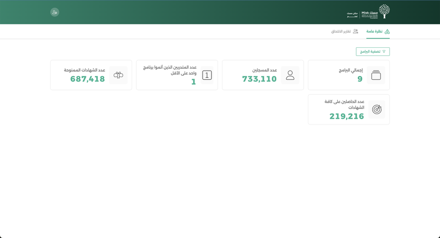

Software
Misk Foundation: Learner Dashboard · المنصة المركزية
Fifteen learning platforms. One login. One version of the truth.
The Mandate
Build a centralised platform integrating 15 Misk learning platforms (SSO integration through Miskhub, one consolidated trainee profile, one progress and certification record) with an admin dashboard exposing engagement and achievement insight across the whole ecosystem.
The Challenge
Fifteen independent platforms with fifteen different data shapes and fifteen different owners, against a client expectation of a single, seamless learner identity across all of them.
The Execution
- Owned project planning end to end and wrote the user stories that translated a fragmented learner journey into buildable increments.
- Ran a hybrid model deliberately: waterfall governance for the integration milestones the client needed to see, agile iteration inside the build itself.
- Served as the single translation layer between the technical team and the client. No requirement reached a developer unqualified.
- Ran feature acceptance personally against defined acceptance criteria, and drove user experience refinements back into the backlog rather than deferring them to a phase two that never comes.
Results Delivered
- Unified trainee profile consolidating progress across all 15 programmes.
- Learner dashboard and admin dashboard delivered and accepted.
- Single sign-in journey replacing 15 separate entry points.
- Engagement and achievement analytics delivered to programme administrators.
Photos

Have a project that needs a steady hand?
Book a free 15-minute call, no pressure, just a conversation about where you're stuck.
Book a Free 15-Min Call